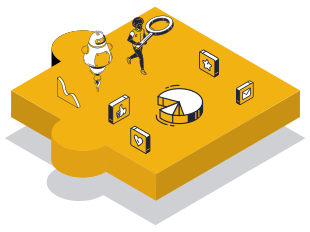

SERVICES CLOUD
Accélérons votre migration vers le cloud,
grâce aux hommes et femmes derrière la machine.
En réunissant les pratiques les plus avancées de DevSecOps,
CyberSécurité, et Data, nous vous aidons à accélérer et soutenir votre
migration vers le cloud durablement en développant des solutions cloud
adaptées à vos cas d'usage.
SÉCURISATION
Notre mission est de vous fournir des environnements résilients
et une expérience utilisateur 100% sécurisée en intégrant les
meilleures pratiques de sécurité dans tout le cycle de vie de
vos applications.
AUTOMATISATION
Nous vous aidons à renforcer la fiabilité de vos environnements
et votre proposition de valeur par l’automatisation et la
normalisation de vos opérations. En quelques mots : déploiement,
productivité, scalabilité… en continu !
OPTIMISATION
Via un monitoring consciencieux, nous assurons une distribution
juste des ressources lors de l'exécution de vos opérations.
Objectif : 0 gaspillage, 0 downtime.
ADOPTION
Nos accompagnateurs et formateurs s’appliquent à soutenir votre
plan d’adoption cloud sur toute votre échelle organisationnelle.
Par la formation et la transmission, nous soutenons une
transition collective, gage d’un succès durable.
INTEGRATION
Avec une visibilité totale de votre infrastructure et une
collaboration transparente avec vos équipes, nous agissons à la
création et à l’intégration de produits et frameworks agilesen
considérant votre marché et les évolutions technologiques.
METHODOLOGIE
De l'information à l'intelligence,
de la connaissance à la décision.
Dès le départ, nous travaillons conjointement avec vos équipes. Des
workshops aux sprints, nous cultivons une intelligence collective qui
transpose les codes vers une culture cloud créatrice de valeur.
AGILE IMPLEMENTATION TO MVP
La phase de développement du MVP est animée par des Sprints, des
ateliers d’onboarding, de formations. L’objectif est d’impliquer
toutes les parties prenantes et d’ancrer les méthodes Agiles qui
soutiendrons vos efforts dans le temps.
GROWTH TO PRODUCTION
Lorsque les résultats sont en parfait accord avec les objectifs
fixés, nous développons et intégrons le produit final à votre
infrastructure. Formées, vos équipes se familiarisent avec votre
culture cloud. Enfin et très important, prenez le temps de fêter
avec votre équipe cette belle réussite !
SUCCESS, WHAT’S NEXT ?
Vous procurer un produit flexible est extrêmement important. En
nous tenant informés de vos résultats et des évolutions
technologiques, nous sommes aptes à apporter les modifications
et/ou nouveaux composants souhaités tout au long de notre
collaboration.
DESIGN THINKING TO POC
Cette phase d’audit, nous permet de révéler tous les pans,
parfois insoupçonnées, de votre infrastructure et de vos
applications… De ces informations, nous établissons ensemble un
plan viable jusqu’à la conception et la mise en essai d’un
POC.
DOMAINES D'EXPERTISE
4 corps de métier conjoints,
pour une transition viable, agile et rentable.


LES GÉNIES DE
L’INNOVATION CONTINUE
Un time market réduit, un SI agile, une expérience utilisateur
optimale. En diffusant la culture DevOps au cœur de vos
opérations, nous achevons ces objectifs par l’automatisation et
la sécurisation de vos cycles développement.
Applications Legacy to applications « Cloud Native
»
Agile Development Stack
Microservices, Serverless …
Auto-scaling, Auto-healing
Monitoring and Logging
CI & CD pipeline management
LES GARDIENS D'UN R.O.I
POSITIF
La sécurité imprègne toutes vos problématiques. Avec vous, nous
œuvrons à la production d’une infrastructure résiliente et
d’environnements utilisateurs sécurisés en intégrant les
techniques les plus avancées dans tout le cycle de vie de vos
applications.
Évaluation et définition du champ d’application
Evaluation des risques
Gouvernance application
Compliance application
Policy application
Automatisation CI/CD

VOS FUTURES MEILLEURES
DÉCISIONS
Grand défis du 21ème siècle, la donnée pilote vos opérations
stratégiques. Notre mission est de vous fournir une data
contextualisée, enrichie, et opportune en sensibilisant vos
équipes à la création de workflow Agiles et
ultra-simplifiés.
TLS Serverless (automatisation)
Système de recommandation
Détection des fraudes
Sentiment Analysis
Unification de workflow Data
Gouvernance

UNE ÉQUIPE FORMÉE,
AUTONOME & CERTIFIÉE
Au-delà de notre accompagnement de terrain, nous vous aidons à
maintenir le cap en ancrant durablement les Hards et softs
skills nécessaires à la réussite de vos use cases Kubernetes via
un parcours de formations certifié et certifiant.
Certified Kubernetes Administratord (CKA)
Certified Kubernetes Application Developer (CKAD)
Kubernetes advanced
Kubernetes fundamentals
Certified Kubernetes Security (CKS)
Kubernetes in production
Excellence
Pourquoi nous faire confiance ?
Passionnés et ambitieux, nous repoussons les limites du possible pour
vous proposer des solutions cloud optimales qui associent et/ou
réconcilient l'Homme et la machine.
> Une expertise éprouvée sur le terrain
> Des partenaires d'excellence